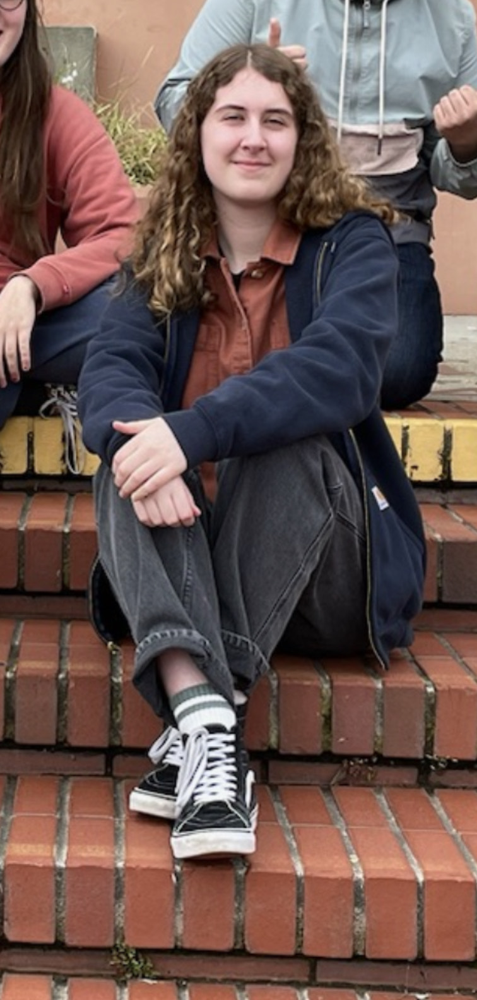

Cassidy Schultz
Parable of the Sower Response
Period 5
My name is Cassidy Schultz and I am a full-time student at Balboa High School in San Francisco. I enjoy painting, illustration, portrait drawing, writing, poetry, digital art, and playing guitar with my band, Feed Cabbage Dead Baggage. I've been playing acoustic and electric guitar for about 4 years and I've been trying to get into writing my own instrumentals.
This is where my first artistic response will go